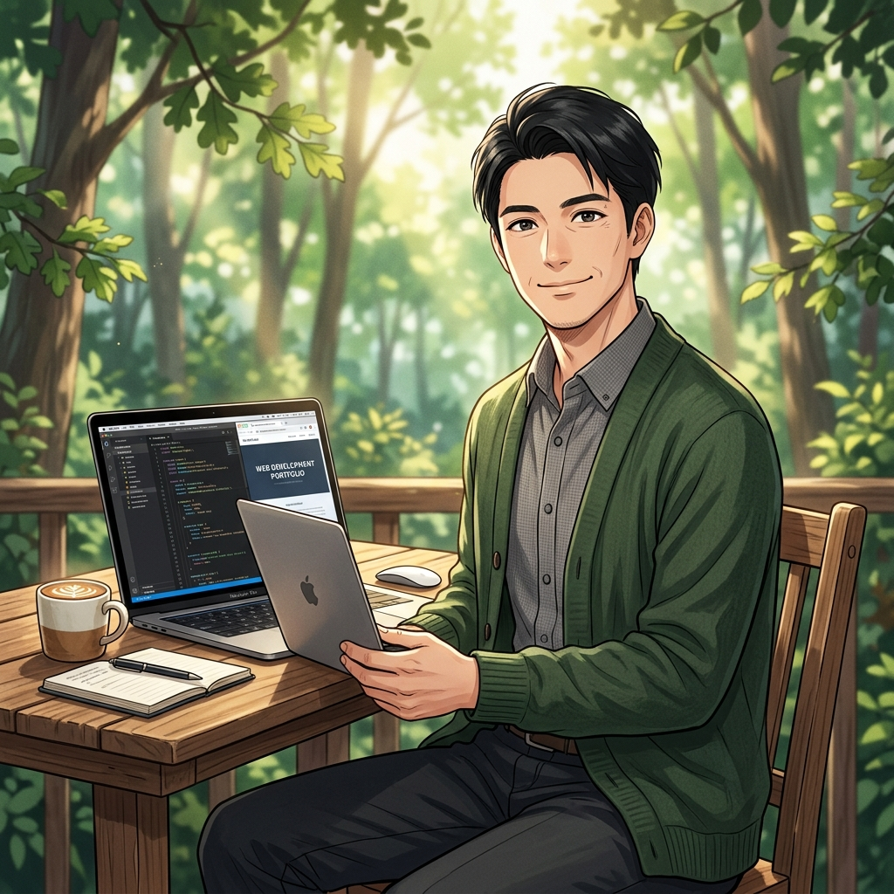

Works
10年間の社会人経験で培ったのは、相手の言葉の裏にある「本当の願い」を汲み取る力です。専門用語に頼らず、お客様と同じ目線で対話することを大切にしています。
Web制作の実務経験はまだ浅いかもしれませんが、その分、一つひとつの案件に対して誰よりも丁寧に向き合い、誠心誠意サポートさせていただきます。

Kage Kota / こた
社会人としての「責任感」と、エンジニアとしての「探究心」。
あなたのビジネスに最適な答えを、共に見つけましょう。